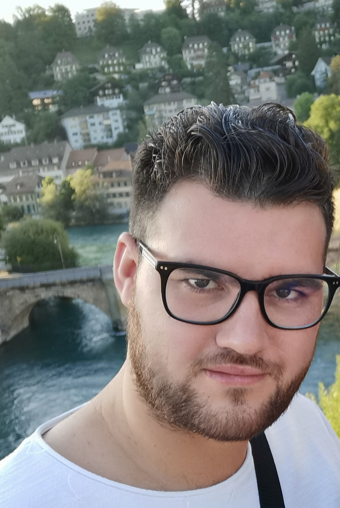
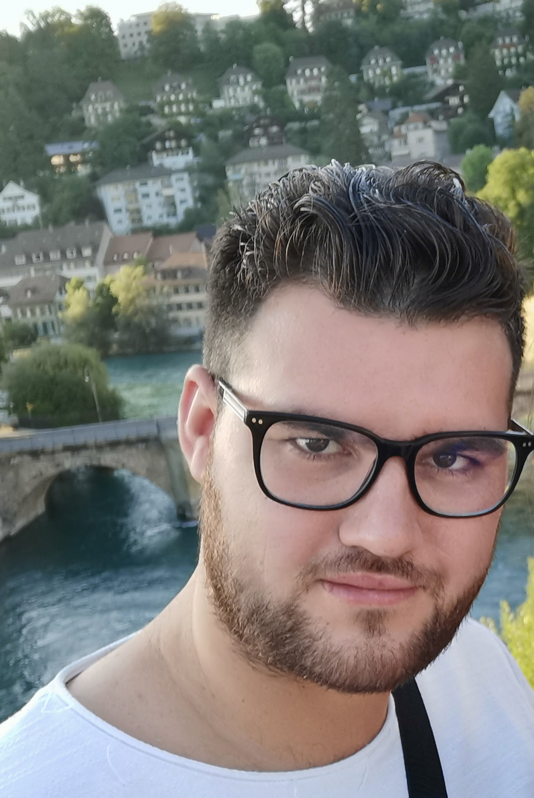
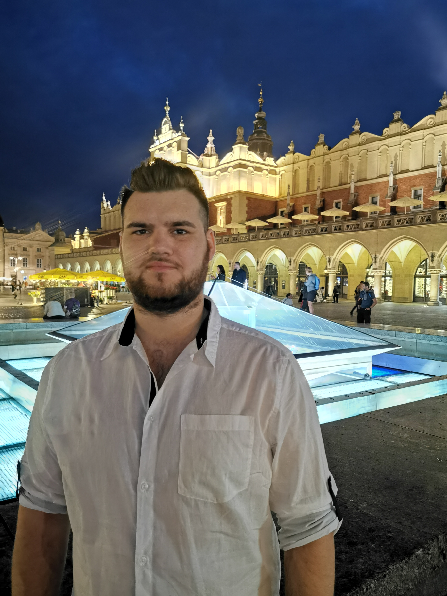
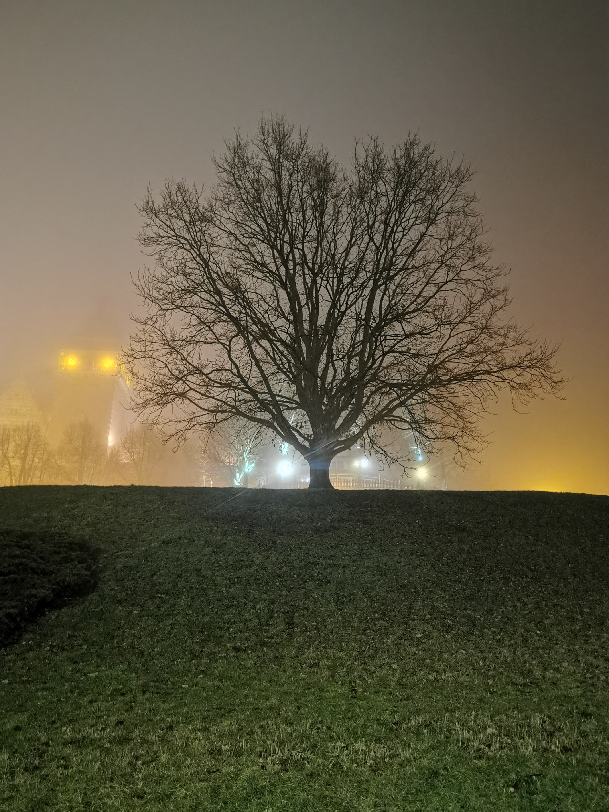
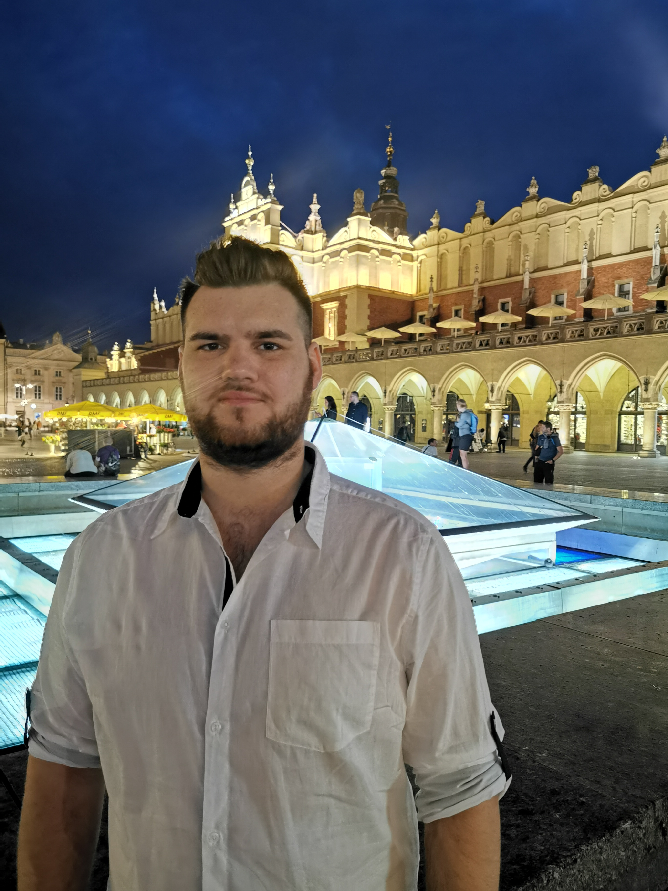
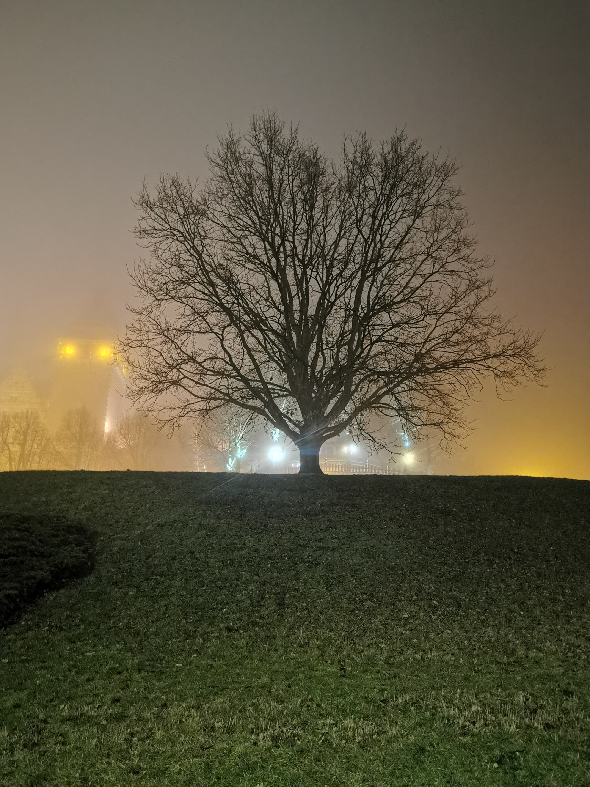

 



O mnie
Cześć, jestem Dominik,
ponieważ zawitałeś na moją stronę pozwól że powiem kilka rzeczy o sobie.
Jeżeli miałbym określić siebie, powiedziałbym że Jestem człowiekiem pragnącym stabilności
finansowej, życia w zgodzie z kompasem moralnym, zdalnej pracy i najważniejsze - szczęścia, z
uwagi na powyższe cały czas edukuje się w kierunku:
finansów osobistych - tu jestem zwolennikiem bloga Marcina Iwuća
Finanse Bardzo Osobiste.
Jestem także zwolennikiem edukowania się w
sprawach lepszego życia z pomocą kanału Macieja
Wieczorka:
Biznes
2.0,
Ekspert w Bentley'u.
Obecnie także uczestniczę w kursie Frontednowy w
YouCode.pl💪.
Wykształcenie
Jestem osobą techniczną, i jak się za chwile przekonasz wszelkie kierunki które obierałem były nakierowane na techniczne podejście do świata. Z natury jestem analityczny, lubię jeżeli coś wynika z czegoś, tzn. jeżeli zachowany jest ciąg przyczynowo skutkowy.👍
2019 - 2022 Zachodniopomorski Uniwerytet Technologiczny – studia II st. – Mechanika i budowa maszyn2014 - 2018 Politechnika Koszalińska – studia I st. - Mechatronika
2010 - 2014 Technikum Informatyczne im. Henryka Sienkiewicza w Kołobrzegu - technik Informatyk
Jak widać ciągle oscylowałem w technicznym środowisku a na każdym z etapów miałem do czynienia z jakąś formą programowania - od podstawowych języków takich jak PAscal 7, C czy C++ przez Arduino i Rosberry Pi aż do projektowania i transformowania projektu na tzw. Język maszynowy za pomocą programów CAD/CAM takich jak SolidWorks, AutoCad czy NX
Doświadczenie
VI.2017 – II.2018 Alplast – stanowisko: projektant CAD i pracownik produkcji
Moja kariera zawodowa zaczeła się od małej firmy, pomimo określonego stanowiska- jak to w małych firmach
-
zajmowałem się wszystkim: od projektowania elementów z blach, przez ich wycinanie na "laserze"
(ciekawostką jest to że tzw, lasery nie używają laseru do cięcia a tak naprawdę rozgrzanego strumienia
powietrza do cięcia), po wyginanie na
giętarce HDS wyciętych elementów- na szczęscie malowanie proszkowe nie było w moim zaresie 😮💨
VI. 2018 – II.2019
Automation - specjalista ds. Pomiarów 3D
Druga praca pokazała Mi że, zarobki nie są tak istotne jak odpowiednio dobrany zespół. Zajmowałem się Skanowaniem obszaró w fabrykach samochodowych tzn. Za pomocą urządzenia zwanego stacjonarnym skanerem laserowym - marki Z+F wraz z oprogramowaniem, tworzona była chmura punktów, skany należało łączyć tak by powstała spójna całość tu np. określony obszar lini produkcyjnej, następnie taką chmurę punków obrabiałem w programie ClaudCompare i/lub Geomagic Design X. Drugą funkcją na tym stanowisku było sprawdzanie poprawności wytworzenia stółów trzymających części samochodowe podczas ich obróbki- słyżył do tego program PolyWorks, oraz w moim wypadku laser śledzący. Jak już wyżej wymieniłem, w tej firmie ze szględu na zły dobór współpracowników - a dokładnie toksyczną atmosfere i dziwne zachowania jednego z kolegów, ostateczenie zrezygnowałem ze współpracy- choć przyznam w dobrym miesiącu możnabyło zarobić nawet 3-4 krotność ówczesnej minimalnej krajowej (służbowe podróże zagraniczne).
VI. 2019 -
Diam Diagnostics Products - Inżynier serwisu
Obecnie pracuje jako serwisant sprzętu medycznego, w gałęzi imunoserologi - w skrócie badanie grup krwi i jej składników. Moja praca polega na dojeździe do klienta i naprawie / przeglądzie bądź diagnozie urządzenia. Moimi obowiązkami poza naprawą, jest także raportowanie oraz utrzymywanie stanu magazynowego. W tej pracy trzeba dobrze zarządzać czasem oraz sprawnie łączyć skutek z jego przyczyną
Umiejętności
W Swojej karierze naukowej kierowałem się zawsze myślą o rozwoju, zarówno osobistym i zawodowym. Iterdyscyplinarność kierunkowa pozwoliła mi na rozwój w wielu płaszczyznach, które się ze sobą łączą. Pozwoliło to na nawiązywanie połączeń i wyznaczanie trendów i łatwiejsze przyswajanie wiedzy oraz głębszego poznania pewnych zjawisk fizycznych
- Prawo jazdy Kat. B
- SEP do 1kV G1 D i E
- Obsługa komputera: Pakiet Office, Open Office, LibreOffice, Outlook
- Tworzenie projektów CAD 3D
- Praca z systemami CRM i ERP
- Czytanie rysunków technicznych
- Analityczne podejście do rozwiązywania problemów
Mam Także inne umiejętności których tutaj nie wymieniłem, ale umówmy się nie trzeba wszystkiego mówić od razu.
- Szczecin, 73-603
- +48 😉
-
 d.kaminski@zoho.com
d.kaminski@zoho.com